Datamodellering
Contents
import numpy as np
import pandas as pd
from scipy import stats
import plotly.express as px
import plotly.graph_objects as go
import plotly.figure_factory as ff
from sklearn.pipeline import make_pipeline
from sklearn.linear_model import LinearRegression
from sklearn.preprocessing import PolynomialFeatures
from sklearn.metrics import mean_squared_error, accuracy_score
from sklearn.model_selection import train_test_split
from sklearn.datasets import make_blobs, make_friedman1
from sklearn.cluster import KMeans
from sklearn.neighbors import KNeighborsClassifier
import plotly.io as pio
pio.renderers.default = "svg"
Datamodellering#
Det er mange forskjellige problemstillinger som vi prøver å løse ved hjelp av modellering. Problemstillingene vi skal se på er klyngeanalyse, regresjon, klassifikasjon og hypotesetesting. Men først må vi se på hvordan vi kan velge ut og evaluere modeller.
Modellutvalg og modellevaluering#
Målet med modellering i data science er å finne mønstre i data som generaliserer til nye data.
Modellutvalg og modellevaluering er to sentrale konsepter data science som hjelper oss å velge den beste modellen for et gitt datasett og evaluere modellens ytelse. Modellutvalg handler om å finne den beste modellen blant flere alternativer. Modellevaluering handler om å vurdere hvor godt den valgte modellen presterer, særlig i forhold til generalisering til ny data.
Vi begynner med et enkelt eksempel. Her har vi litt data.
rng = np.random.RandomState(0)
N = 30
n0 = 10
n1 = 20
x = rng.uniform(size=N).reshape(-1, 1)
y = 1 - x + 3*x**2 + rng.normal(size=N, scale=0.2).reshape(-1, 1)
x_train = x[:n0, :]
x_val = x[n0:n1, :]
x_test = x[n1:, :]
y_train = y[:n0, :]
y_val = y[n0:n1, :]
y_test = y[n1:, :]
fig = px.scatter(x=x_train.T[0], y=y_train.T[0])
fig.update_layout(template="simple_white", xaxis_range=[0,1], yaxis_range=[0,5])
fig.show()
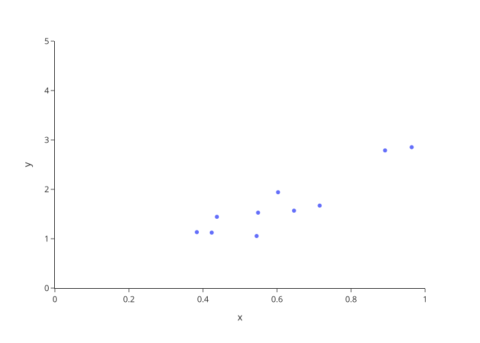
Det ser ut som om det er en sammenheng mellom \(x\)-aksen og \(y\)-aksen. Vi har som mål å predikere \(y\)-akseverdier basert på kunnskap om \(x\)-akseverdier.
Her er en enkel modell. Vi har funnet den beste rette linjen som går gjennom data.
polyreg = {deg: make_pipeline(PolynomialFeatures(degree=deg), LinearRegression()).fit(x_train, y_train) for deg in [1, 2, 5, 10]}
mse_train = {deg: mean_squared_error(y_train, reg.predict(x_train)) for deg, reg in polyreg.items()}
mse_val = {deg: mean_squared_error(y_val, reg.predict(x_val)) for deg, reg in polyreg.items()}
x_line = np.arange(0, 1, .01).reshape(-1, 1)
y_lines = {deg: reg.predict(x_line) for deg, reg in polyreg.items()}
def poly_fig(fig, deg, x_line, y_line):
fig_deg = go.Figure(fig)
fig_deg.add_trace(go.Scatter(x=x_line.T[0], y=y_line.T[0], mode='lines', name=deg))
fig_deg.update_layout(legend_title_text='polynomgrad')
return fig_deg
poly_figs = {deg: poly_fig(fig, deg, x_line, y_line) for deg, y_line in y_lines.items()}
poly_figs[1].show()
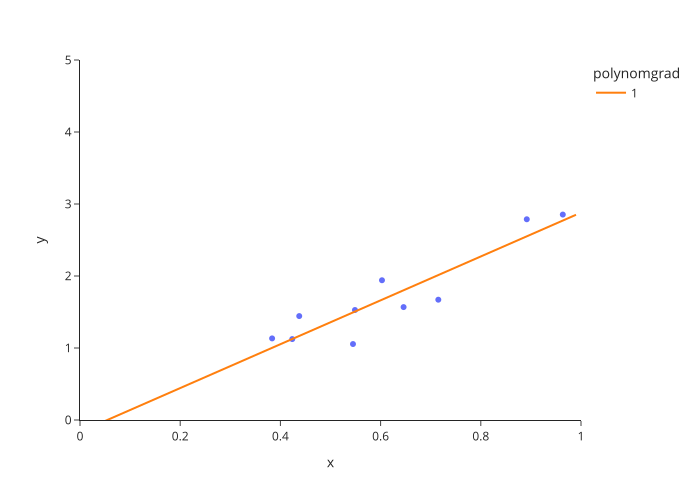
Vi har funnet denne linjen ved å minimere det som heter gjennomsnittelig kvadrert feil. Gitt \(n\) datapunkter \(X \in \mathbb{R}^d\) og tilsvarende svar \(y \in \mathbb{R}\) og en funksjon \(f\colon \mathbb{R}^d \rightarrow \mathbb{R}\), så er den gjennomsnittlige kvadrerte feilen \(\frac{1}{n}\sum_{i=1}^n{(f(x_i)-y_i)^2}\). Det vi prøver å finne er altså denne funksjonen som gir minst gjennomsnittlig kvadrert feil.
I stedet for den beste rette linjen gjennom data kan vi også se på den beste andregradspolynomen, femtegradspolynomen og tiendegradspolynomen. Her får vi følgende resultater.
for deg, fig in poly_figs.items():
if deg>1:
fig.show()
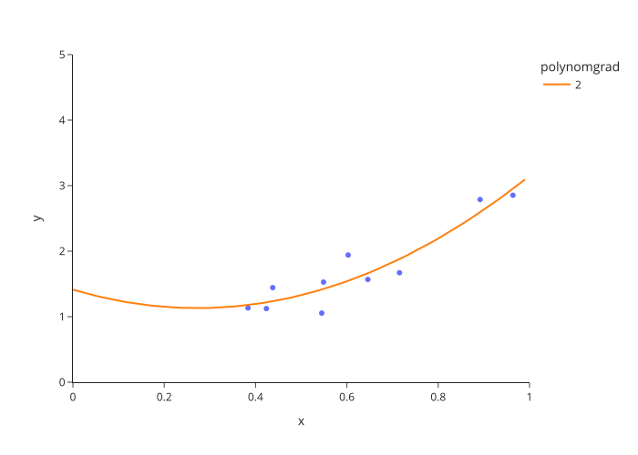
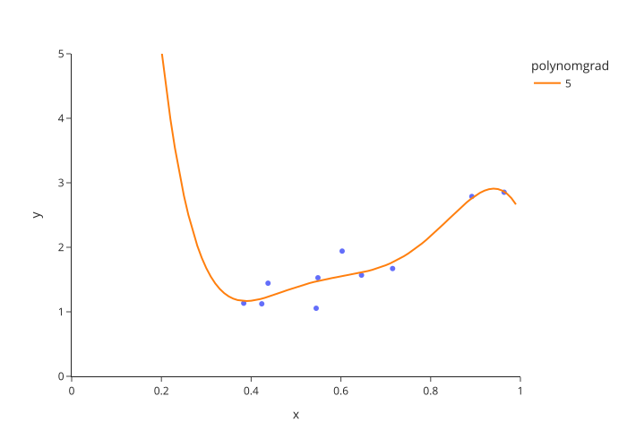
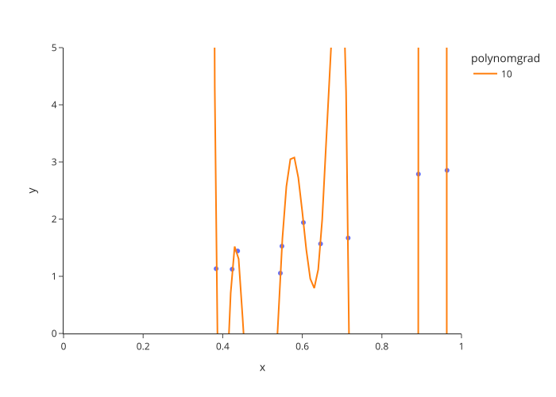
Med tiendegradspolynom, så blir det ganske store endringer i funksjonen. Dette passer velidg godt til dataene våre, men det ser ikke ut som om det vil generaliseres til nye data. La oss prøve det.
For å finne ut om det generaliseres så bruker vi valideringsdata. Det er data som vi ikke ser på før vi har lagd modellene våre. Så kan vi spørre hva som er den gjennomsnittlige kvadrerte feilen for valideringsdata gitt funksjonen som ble tilpasset treningsdatta. For den lineære modellen ble det 0.07.
def add_validation_data(fig, x_val, y_val):
fig_val = go.Figure(fig)
fig_val.add_trace(go.Scatter(x=x_val.T[0], y=y_val.T[0], mode='markers', name='Valideringsdata'))
return fig_val
val_figs = {deg: add_validation_data(fig, x_val, y_val) for deg, fig in poly_figs.items()}
for fig in val_figs.values():
fig.show()
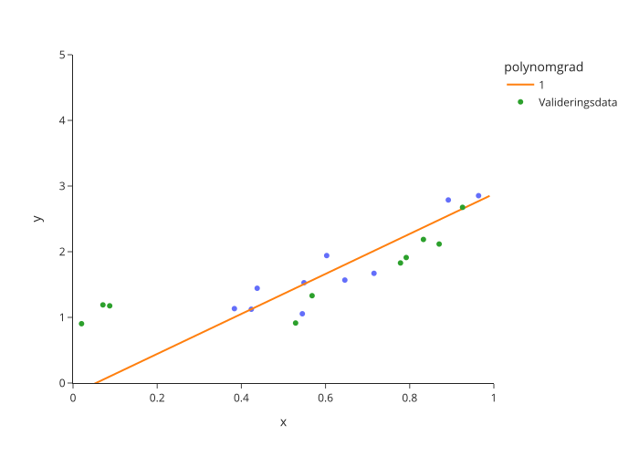
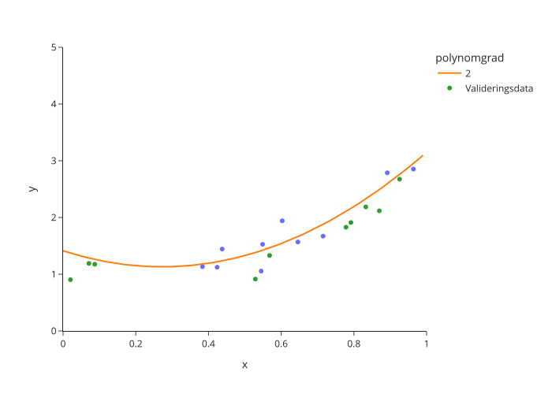
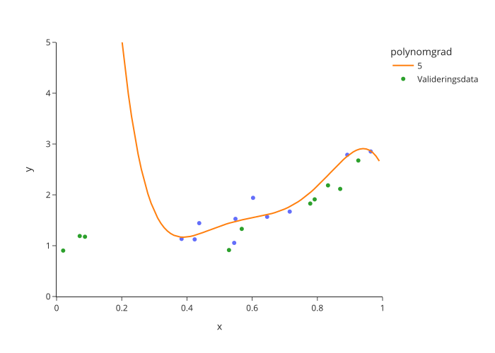
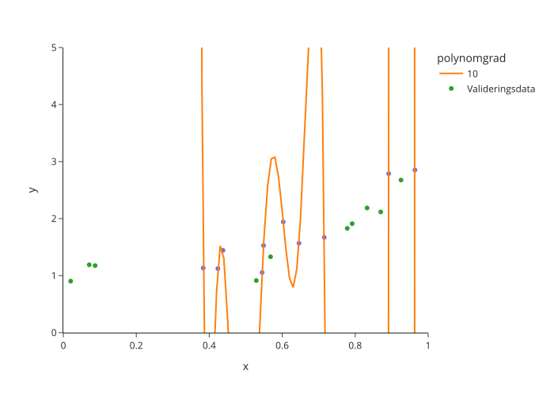
Vi ser også at det er en stor forskjell mellom feilen på valideringsdata og feilen på treningsdata:
print(pd.DataFrame(dict(treningsfeil=mse_train, valideringsfeil=mse_val)).rename_axis(index='Polynomgrad'))
treningsfeil valideringsfeil
Polynomgrad
1 5.947663e-02 4.233205e-01
2 4.493990e-02 7.803062e-02
5 3.915469e-02 1.703658e+02
10 5.281526e-14 3.725662e+11
Sammenfattet kan vi si at den lineære modellen var en undertilpasning siden den ikke passet veldig godt til trenings eller valideringsdata. Den kvadratiske modellen passet bra. Hoyeregradspolynomer var en overtilpasning, siden de passet mye bedre til treningsdata enn til valideringsdata.
Det var eksempelet. Nå kommer den generelle metonen for modellutvalg og evaluering. Vi deler alltid data i tre deler, treningsdata, valideringsdata og testdata.
Treningsdata bruker vi for å tilpasse modellen. Vi bruker også treningsdata for hele den utforskende dataanalysen.
Valideringsdata bruker vi for å velge ut en modell. Her ville vi valgt ut den kvadratiske modellen fordi den har minst gjennomsnittlig kvadrert feil på valideringsdata.
Testdata for å gi en objektiv evaluering av den endelige modellen. Vi bruker testdata bare for den modellen som vi valgte ut basert på valideringsdata.
mse_test = np.round(mean_squared_error(y_test, polyreg[2].predict(x_test)), 2)
print(mse_test)
0.12
Her ser vi at vi fikk en gjennomsnittelig kvadrert feil av 0.12 på testdata.
Vi kan altså forvente en gjennomsnittelig kvadrert feil av 0.12 på nye data.
For å faktisk dele opp data bruker vi funksjonen train_test_split fra sklearn. Her kan vi angi både X, y og størrelse av de to dataset. Her er et eksempel:
# generere data
X, y = make_blobs(n_samples=1000, random_state=0)
# dele data i trenings-, validerings- og testdata
X_train, X_valtest, y_train, y_valtest = train_test_split(X, y, train_size=0.8, random_state=0)
X_val, X_test, y_val, y_test = train_test_split(X_valtest, y_valtest, test_size=0.5, random_state=0)
# se på datastørrelser
print('Datastørrelse:')
print('Hele datasettet - X:', X.shape, ', y:', y.shape)
print('Trenings-data - X:', X_train.shape, ', y:', y_train.shape)
print('Validering-data - X:', X_val.shape, ', y:', y_val.shape)
print('Test-data - X:', X_test.shape, ', y:', y_test.shape)
Datastørrelse:
Hele datasettet - X: (1000, 2) , y: (1000,)
Trenings-data - X: (800, 2) , y: (800,)
Validering-data - X: (100, 2) , y: (100,)
Test-data - X: (100, 2) , y: (100,)
Klyngeanalyse#
Problemet i klyngeanalyse er å gruppere data i forskjellige delmengder kalt klynger. Vi får gitt data uten å vite om det er grupper, hvor mange grupper det er, eller hvilken gruppe en spesifikk datapunkt hører til. Målet er å lage en modell eller funksjon som tar datapunkt som input og gir tilbake hvilken klynge de hører til. Her er et eksempel med data i to dimensjoner. Her ser vi enkelt at det er tre grupper av data.
X, _ = make_blobs(n_samples=1500, random_state=6)
fig = px.scatter(x=X[:, 0], y=X[:, 1])
fig.show()
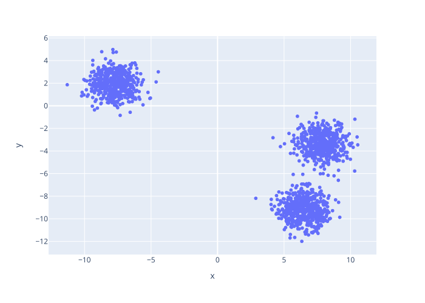
Når vi bruker en algoritme for å finne klyngler, så får vi for eksempel ut følgende tilhørigheten.
kmeans = KMeans(n_clusters=3)
y = kmeans.fit_predict(X)
fig = px.scatter(x=X[:, 0], y=X[:, 1], color=pd.Categorical(y), color_discrete_sequence=px.colors.qualitative.Set1[1:], category_orders={'color':[0, 1, 2]})
fig.show()
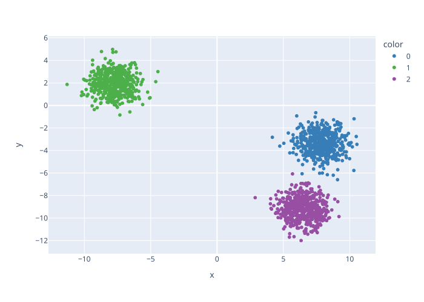
Klyngeanalyse kommer vi ikke til å snakke om mer i dette kurset. Målet her er bare at dere er kjent med begrepet og kan skille det fra de andre problemstillingene som vi skal se på senere.
Regresjon#
Regresjon prøver å finne en matematisk sammenheng mellom en numerisk avhengige variabler og en eller flere uavhengige variabler. Vi kommer alltid til å bruke symbolet \(X \in \mathbb{R}^d\) for de uavhengige variablene og \(y \in \mathbb{R}\) for den avhengige variabelen. En annen måte å si det er at vi prøver å predikere \(y\) for en gitt \(X\). Her har vi gitt data \(X\) og tilhørende merkelapper \(y\) og målet er å lage prediksjoner for nye \(X\) der vi ikke vet hva \(y\) er.
Her ser vi på et eksempel med data \(X\) som inneholder 5 forskjellige variabler og en numerisk variabel \(y\) som vi prøver å predikere.
X, y = make_friedman1(random_state=42, n_features=5)
print(X.shape)
print(y.shape)
(100, 5)
(100,)
Som første steg deler vi data i trenings-, validerings- og testdata.
X_train, X_valtest, y_train, y_valtest = train_test_split(X, y, train_size=0.7, random_state=0)
X_val, X_test, y_val, y_test = train_test_split(X_valtest, y_valtest, test_size=0.5, random_state=0)
Før vi begynner med modelleringen så ser vi litt på treningsdata.
for col in range(X_train.shape[1]):
fig = px.scatter(x=X_train[:, col], y=y_train)
fig.update_layout(template="simple_white", xaxis_title=r"$x_{}$".format(col))
fig.show(renderer='svg')
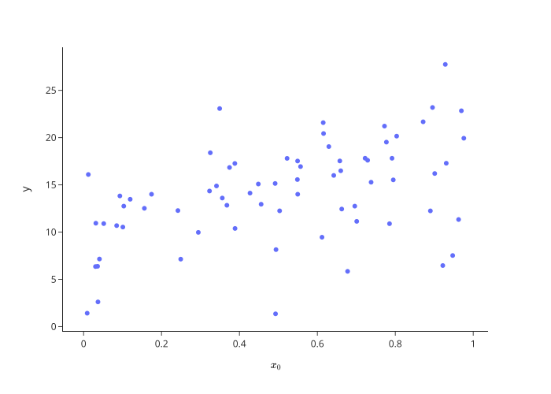
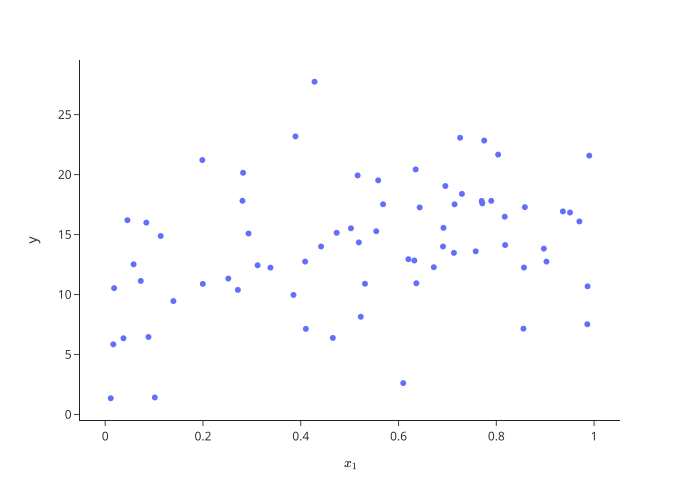
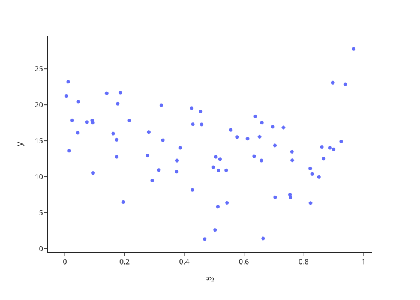
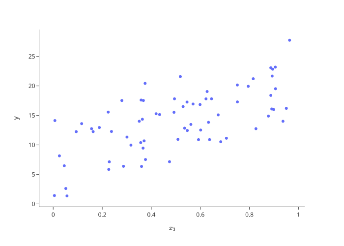
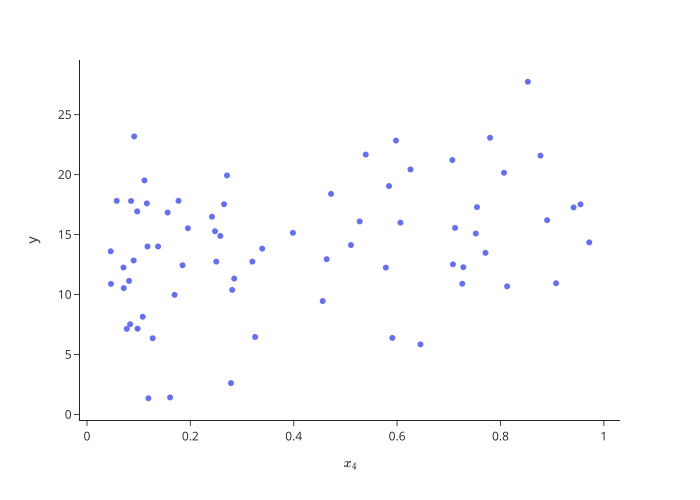
Vi ser at flere av variablene ser ut til å være relatert til \(y\). Det er et bra tegn, i så fall kan vi håpe å predikere \(y\) basert på gitte \(X\)-verdier. Men der er ikke enkelt å se hva som er forskjellen. For å finne ut av det, bruker vi regresjonsmodeller.
Grunnlinjemodeller#
Den første modellen vi lager er alltid en grunnlinjemodell som vi lager for å finne ut hvor godt en dårlig modell vil fungere. Her gjetter vi middelverdien av \(y\) på treningsdata, uavhengig av hva \(X\) er.
Her ser vi hvordan å gjøre det med sklearn. Vi bruker fit-metoden for å tilpasse modellen til data. Så bruker vi predict-metoden for å predikere \(y\) for nye \(X\)-verdier. Prediksjonen vi får ut er 14.09 for alle \(X\)-verdiene. Det er den samme verdien uansett \(X\), siden vi bare predikerer middelverdien.
I sklearn fungerer alle regresjonsmodeller likt. De har alltid en fit-metode for å tilpasse til treningsdata og en predict-metode som vi bruker når vi vil predikere for nye data.
Her bruker vi den gjennomsnittlige kvadrerte feilen (MSE) for å måle kvaliteten av prediksjonene. Legg merke på at vi tilpasser (fit) modellen på treningsdata og finner prediksjoner (predict) og gjennomsnittlig kvadrert feil på valideringsdata.
from sklearn.dummy import DummyRegressor
# lage modell
baseline = DummyRegressor(strategy="mean")
# tilpasse modell
baseline.fit(X_train, y_train)
# prediksjon på valideringsdata
prediction = baseline.predict(X_val)
print('Første 5 prediksjonene:', prediction[:5])
# beregn gjennomsnittlig kvadrert feil på valideringsdata
print('MSE:', np.round(mean_squared_error(y_val, prediction), decimals=2))
Første 5 prediksjonene: [14.09255591 14.09255591 14.09255591 14.09255591 14.09255591]
MSE: 19.2
Lineær regresjon#
Den kanskje mest kjente regresjonsmetoden er lineær regresjon. Her er modellen et hyperplan (en generalisering av et vanleg todimensjonalt plan til n dimensjonar). Men andre ord, så prøver vi å finne parametre \(\beta_0, \dots, \beta_d\) slik at tilnærmet
Men det finnes mange hyperplan som kan passe til data. Så hvordan finner vi ut det beste hyperplanet? Vi prøver å minimere gjennomsnittlig kvadrert feil på treningsdata og håper at det vil generalisere til lav gjennomsnittlig kvadrert feil også på valideringsdata. I sklearn bruker vi LinearRegression, som vist i følgende eksempelet.
from sklearn.linear_model import LinearRegression
# lage modell
lm = LinearRegression()
# tilpasse modell
lm.fit(X_train, y_train)
# prediksjon på valideringsdata
prediction = lm.predict(X_val)
print('Første 5 prediksjonene:', prediction[:5])
# beregn gjennomsnittlig kvadrert feil på valideringsdata
print('MSE:', np.round(mean_squared_error(y_val, prediction), decimals=2))
Første 5 prediksjonene: [13.72704778 7.36855849 17.14893089 12.76585721 17.9784276 ]
MSE: 7.6
Den eneste forskjell mellom denne koden og den for grunnlinjemodellen er at vi her bruker LinearRegression i stedet for DummyRegressor. Her ser vi at prediksjonene avhenger av inputt. Vi ser også at den gjennomsnittlige kvadrerte feilen på valideringsdata har blitt litt lavere.
Polynomregresjon#
Som neste modell, ser vi på polynomregresjon. Den er en direkte generalisering av lineær regresjon. I stedet for å bare se på variablene \(X\), så ser vi i tillegg på variablen polynomer i \(X\). Så vi har egentlig igjen en vanlig lineær regresjon, men nå har vi lagt til flere uavhengige variabler.
For polynomial regresjon av grad \(k\) for \(1\)-dimensjonale data prøver vi altså å finne koeffisienter \(\beta_0, \dots, \beta_k\) slik at
Med to variabler og andregradspolynomer, så gjelder det å finne koeffisienter \(\beta_0, \beta_1, \beta_2, \beta_{11}, \beta_{12}, \beta_{22}\) slik at
Målet er igjen å finne parametre beta, slik at summen av de kvadrerte avvikene er minimert.
Siden dette er en kombinasjon av å lage nye variabler og å bruke lineær regresjon, så gjør vi også denne kombinasjonen med sklearn. Vi bruker PolynomialFeatures for å lage de ekstra-variablene og som før LinearRegression for den lineære regresjonen. For å kombinere de to stegene, bruker vi make_pipeline.
from sklearn.linear_model import LinearRegression
from sklearn.preprocessing import PolynomialFeatures
from sklearn.pipeline import make_pipeline
# lage modell
model = make_pipeline(PolynomialFeatures(degree=2), LinearRegression())
# tilpasse modell
model.fit(X_train, y_train)
# prediksjon på valideringsdata
prediction = model.predict(X_val)
print('Første 5 prediksjonene:', prediction[:5])
# beregn gjennomsnittlig kvadrert feil på valideringsdata
print('MSE:', np.round(mean_squared_error(y_val, prediction), decimals=2))
Første 5 prediksjonene: [15.00975415 6.27520088 15.59472295 11.57910689 21.17309758]
MSE: 2.59
Den eneste forskjell mellom denne koden og den før er i måten vi lager modellen. Her ser vi at den gjennomsnittlige kvadrerte feilen på valideringsdata har blitt en del lavere.
I PolynomialFeatures velger vi hvor høy grad polynomer vi har lyst å ta med. Dette kalles for en hyperparameter av metoden vår. Vi kan teste forskjellige verdier av hyperparameteren for å finne ut hva som fungerer best.
models = {}
for deg in range(1, 10):
# lage modell
models[deg] = make_pipeline(PolynomialFeatures(degree=deg), LinearRegression())
# tilpasse modell
models[deg].fit(X_train, y_train)
# prediksjon på valideringsdata
prediction = models[deg].predict(X_val)
# beregn gjennomsnittlig kvadrert feil på valideringsdata
print(r'{}-gradspolynom - MSE: {}'.format(deg, np.round(mean_squared_error(y_val, prediction), decimals=2)))
1-gradspolynom - MSE: 7.6
2-gradspolynom - MSE: 2.59
3-gradspolynom - MSE: 2.08
4-gradspolynom - MSE: 0.2
5-gradspolynom - MSE: 0.25
6-gradspolynom - MSE: 0.58
7-gradspolynom - MSE: 1.02
8-gradspolynom - MSE: 1.76
9-gradspolynom - MSE: 2.52
Her ser vi altså at 4-gradspolynomer gir lavest gjennomsnittlig kvadrert feil på valideringsdata. Derfor velger vi denne modellen.
For å vite hva vi kan forvente på nye data, så sjekker vi også den gjennomsnittlige kvadrerte feilen på testdata.
# prediksjon på testdata
prediction = models[4].predict(X_test)
# beregn gjennomsnittlig kvadrert feil på testdata
print(r'4-gradspolynom - MSE (test): {}'.format(np.round(mean_squared_error(y_test, prediction), decimals=2)))
4-gradspolynom - MSE (test): 0.22
Vi kan altså forvente at modellen vår vil gi en gjennomsnittlig kvadrert feil av 0.24 på nye data.
Andre regresjonsmodeller#
Det var modellene som vi diskuterer i dette kurset. Men det finnes også mange andre regresjonsmetoder. Her er en liste av noen modeller fra sklearn:
Lasso regresjon
sklearn.linear_model.LassoElastisk nett regresjon,
sklearn.linear_model.ElasticNetBeslutningstreregresjon
sklearn.tree.DecisionTreeRegressorTilfeldig skog regresjon
sklearn.ensemble.RandomForestRegressorSupport vektor regresjon
sklearn.svm.SVRGaussisk prosess
sklearn.gaussian_process.GaussianProcessRegressorNevrale nett
sklearn.neural_network.MLPRegressor
For eksempel nevrale nett er en generalisering av lineær regresjon. For å velge ut hvilke som gir mening å bruke, så er det veldig nyttig å forstå akkurat hva de gjør. På Universitetet i Bergen blir dette undervist i INF264 (innføring i maskinlæring), og INF265 (dyplæring). Det er også mulig å bare prøve ut metodene. Så lenge at man gjør en ordentlig modellseleksjon og evaluering, så blir resultatene riktige. Men uten mer kunnskap er det vanskelig å velge ut hvilke modeller å prøve ut og hvilke hyperparameter som er viktige.
Ytelsesmål for regresjonsproblemer#
Når modellen er trent, evaluerer vi ytelsen ved hjelp av valideringsdata. Her har vi bare sett på gjennomsnittlig kvadrert feil som ytelsesmål. Men det finnes mange andre metrikker for regresjonsmodeller. Hva vi bruker avhenger av hva vi prøver å oppnå. Her er noen eksempler:
Gjennomsnittlig kvadrert feil (MSE): Kvadrering av feilene gir større vekt til større feil, noe som kan være nyttig hvis store avvik er spesielt uønskede. Men det kan også gjøre metrikken sensitiv for uteliggere (data punkter som ligger langt fra resten av dataene), siden kvadreringen gjør at store feil blir uforholdsmessig store. Måleenheten for MSE er kvadratet av måleenheten for den avhengige variabelen, noe som kan være vanskelig å tolke.
Kvadratroten av gjennomsnittlig kvadrert feil (RMSE): Det har de samme egenskapene som MSE, men har samme måleenhet som den avhengige variabelen, noe som gjør det lettere å tolke enn MSE.
Gjennomsnittlig absolutt feil (MAE): Den er mindre sensitiv for uteliggere sammenlignet med MSE/RMSE fordi den bruker absolutte forskjeller i stedet for kvadrerte forskjeller. Samtidig vekter den alle feil likt, uavhengig av størrelse, noe som kan være uønsket i noen tilfeller hvor større feil er mer kritiske.
Gjennomsnittlig absolutt prosentfeil: Det uttrykker feilen som en prosentandel, noe som kan være lettere å forstå og kommunisere. Dette kan være praktisk når man sammenligner feil på tvers av datasett med forskjellige skalaer. Men det kan gi veldig store feil når de observerte verdiene er nær null, noe som fører til en ustabil prosentandel.
Det finnes mange flere ytelsesmål og det er viktig å vurdere hva som er et godt mål for praktiske problemstillinger.
Klassifikasjon#
I klassifikasjonsproblemet er spørsmålet ganske lignende som for regresjonsproblemet. Forskjellen er at den avhengige variabelen som vi prøver å predikere er en kategorisk variabel \(y\).
# lage og forberede data
X, y = make_blobs(n_samples = 200, n_features=2, centers=[(-1, -1), (1, 0)], cluster_std=[1.5, 0.8], random_state=0)
X_train, X_valtest, y_train, y_valtest = train_test_split(X, y, train_size=0.7, random_state=0)
X_val, X_test, y_val, y_test = train_test_split(X_valtest, y_valtest, test_size=0.5, random_state=0)
df_train = pd.DataFrame(X_train, columns=('x0', 'x1'))
df_train.loc[:, 'klasse'] = pd.Categorical(y_train)
def plot_classifier(clf, df=df_train):
nr_samples=401
xy = np.linspace(-4, 4, nr_samples)
grid = np.array([x.flatten() for x in np.meshgrid(xy, xy)]).transpose()
fig = px.scatter(data_frame=df, x='x0', y='x1', color='klasse')
fig.add_trace(
go.Contour(
z=clf.predict(grid).reshape(nr_samples, nr_samples),
contours_coloring='none',
x = xy,
y = xy,
line_width=1,
showlegend=False
)
)
fig.update_layout(template = 'plotly_white')
fig.update_xaxes(range=[-4, 4])
fig.update_yaxes(range=[-4, 4])
return fig
# klassifikasjonsmodell
knn = KNeighborsClassifier(n_neighbors=11)
knn.fit(X_train, y_train)
plot_classifier(knn).show()
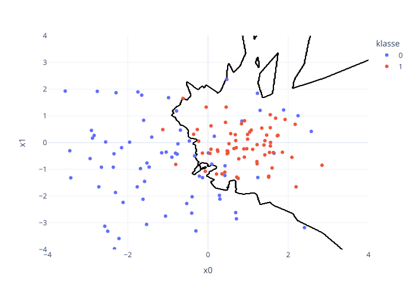
I denne figuren har vi gitt uavhengige variabler \(X = (X_0, X_1)\) sammen med en merkelapp \(y\) eller klasse som er visualisert som farge. Klassifikasjonsmodellen vi har lagt her er visualisert ved å tegne skillelinje mellom hva vi klassifiserer som klasse 0 eller blå og hva vi predikerer som klasse 1 eller rødt.
Grunnlinjemodeller#
Vi begynner igjen med en grunnlinjemodell. Den enkleste modellen vi kan komme på er å alltid predikere den klassen som er mest brukt i treningsdata.
from sklearn.dummy import DummyClassifier
# lage modell
baseline = DummyClassifier(strategy="prior")
# tilpasse modell
baseline.fit(X_train, y_train)
# prediksjon på valideringsdata
prediction = baseline.predict(X_val)
print('Første 5 prediksjonene:', prediction[:5])
# beregn gjennomsnittlig kvadrert feil på valideringsdata
print('Nøyaktighet:', np.round(accuracy_score(y_val, prediction), decimals=2))
Første 5 prediksjonene: [0 0 0 0 0]
Nøyaktighet: 0.53
Når vi da tilpasser modellen finner vi ut at den mest brukte klassen i treningsdata er 0 og alle prediksjonene våre blir altså 0. Her bruker vi nøyaktighet (accuracy_score) for å evaluere modellen. Det er bare antall riktige prediksjoner delt på total antall prediksjoner. Vi ser på andre ytelsesmål for klassifikasjonsproblemer senere.
Men i klassifikasjonsproblemer kan vi ikke bare spørre hva som er den mest sannsynlige klassen, men også hvor sannsynlig den er. I så fall må vi bruke predict_proba-metoden av sklearn-modellen vår.
prediction_proba = baseline.predict_proba(X_val)
print('Første 5 prediksjonene:')
print(prediction_proba[:5].round(2))
Første 5 prediksjonene:
[[0.51 0.49]
[0.51 0.49]
[0.51 0.49]
[0.51 0.49]
[0.51 0.49]]
For grunnlinjemodellen finner vi at 51% av treningsdata er klasse 0 og 49% av data er klasse 1. Da blir alle prediksjonene våre at sannsynligheten for klasse 0 er 0.51 og for klasse 1 er 0.49.
Logistisk regresjon#
Den første ordentlige klassifikasjonsmetoden vi ser på er logistisk regresjon. Det er litt forvirrende at det heter regresjon, men det er fordi metoden er en direkte generalisering fra lineær regresjon der den prøver å tilpasse sannsynligheten for å være i en klasse.
Logistisk regresjon modellerer sannsynlighet \(p\) for å være i klasse 1 som
Og siden sannsynligheten er numerisk, så heter det regresjon. Når vi ser på formelen her, så er høyre-siden akkurat som for lineær regresjon. Venstresiden er ikke sannsynligheten, men en funksjon av sannsynligheten. Det er i hovedsak fordi det ikke ville gitt mening å modellere sannsynligheten lineært. Sannsynligheten er begrenset mellom 0 og 1, og en lineær modell er ikke det. Derfor modellerer vi heller en funksjon av sannsynligheten, som kan ta alle mulige verdier.
from sklearn.linear_model import LogisticRegression
# lage modell
logreg = LogisticRegression()
# tilpasse modell
logreg.fit(X_train, y_train)
# prediksjon på valideringsdata
prediction = logreg.predict(X_val)
# beregn gjennomsnittlig kvadrert feil på valideringsdata
print('Nøyaktighet:', np.round(accuracy_score(y_val, prediction), decimals=2))
Nøyaktighet: 0.77
plot_classifier(logreg).show()
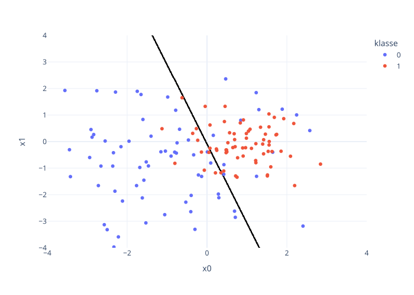
Prediksjoner fra logistisk regresjon ser vi her. Vi ser at skillelinjen mellom er en rett linje. Det gir mening, siden skillelinjen er der sannsynligheten er 0.5 og det modellerer vi som en lineærkombinasjon av de uavhengige variablene.
k-nærmeste nabo klassifikasjon#
En annen klassifikasjonsmetode er k-nærmeste nabo (k-NN) klassifisering. Den brukes til å klassifisere datapunkter basert på egenskapene til de nærmeste naboene i datasettet. Den fungerer under antakelsen om at datapunkter som har lignende egenskaper sannsynligvis tilhører samme klasse.
Der er modelltilpassing veldig enkelt. Vi trenger bare å lagre treningsdata.
Når vi skal klassifisere et nytt datapunkt, søker k-NN etter de k nærmeste datapunktene (naboene) i treningsdatasettet. Basert på hvilken klasse de fleste av disse naboene tilhører, blir det nye datapunktet klassifisert. Hvis vi vil predikere sannsynligheter, så kan vi gjøre det ved å angi proporsjon av klassene blant de nærmeste naboene.
For k-NN klassifikasjon er \(k\) en hyperparameter. Som vi så på polynomregresjon kan vi prøve ut forskjellige hyperparametre og velge ut modellen som fungerer best på valideringsdata.
from sklearn.neighbors import KNeighborsClassifier
models = {}
for k in range(1, 41, 2):
# lage modell
models[k] = KNeighborsClassifier(n_neighbors=k)
# tilpasse modell
models[k].fit(X_train, y_train)
# prediksjon på valideringsdata
prediction = models[k].predict(X_val)
# beregn gjennomsnittlig kvadrert feil på valideringsdata
print(r'{}-nærmeste naboer - nøyaktighet: {}'.format(k, np.round(accuracy_score(y_val, prediction), decimals=2)))
1-nærmeste naboer - nøyaktighet: 0.77
3-nærmeste naboer - nøyaktighet: 0.8
5-nærmeste naboer - nøyaktighet: 0.8
7-nærmeste naboer - nøyaktighet: 0.8
9-nærmeste naboer - nøyaktighet: 0.8
11-nærmeste naboer - nøyaktighet: 0.83
13-nærmeste naboer - nøyaktighet: 0.83
15-nærmeste naboer - nøyaktighet: 0.8
17-nærmeste naboer - nøyaktighet: 0.83
19-nærmeste naboer - nøyaktighet: 0.8
21-nærmeste naboer - nøyaktighet: 0.8
23-nærmeste naboer - nøyaktighet: 0.8
25-nærmeste naboer - nøyaktighet: 0.8
27-nærmeste naboer - nøyaktighet: 0.83
29-nærmeste naboer - nøyaktighet: 0.83
31-nærmeste naboer - nøyaktighet: 0.83
33-nærmeste naboer - nøyaktighet: 0.83
35-nærmeste naboer - nøyaktighet: 0.83
37-nærmeste naboer - nøyaktighet: 0.83
39-nærmeste naboer - nøyaktighet: 0.83
Vi legger merke til at det kan bli vanskelig å skille modeller bare basert på nøyaktighet. Her velger vi den enkleste modellen (færrest antall naboer) som gir den maksimale nøyaktigheten.
plot_classifier(models[17]).show()
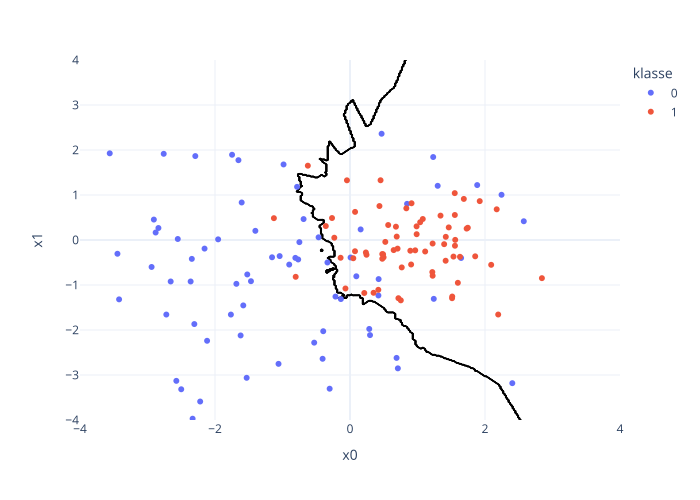
Her ser vi på skillelinjen mellom de to klassene i 17-nærmeste nabo-klassifikasjonsmodellen.
# prediksjon på testdata
prediction = models[17].predict(X_test)
# beregn gjennomsnittlig kvadrert feil på testdata
print(r'17-nærmeste naboer - nøyaktighet: {}'.format(np.round(accuracy_score(y_test, prediction), decimals=2)))
17-nærmeste naboer - nøyaktighet: 0.8
Som alltid regner vi bare ut generaliseringsevnen for den beste modellen. I dette tilfelle kan vi forvente å ha 90% nøyaktighet på nye data.
Andre klassifikasjonsmodeller#
Det var modellene som vi diskuterer i dette kurset. Men som for regresjonsmodeller så finnes det også mange andre klassifikasjonsmetoder. Her er en liste av noen modeller fra sklearn:
Naive Bayes
sklearn.naive_bayes.MultinomialNBBeslutningstre,
sklearn.tree.DecisionTreeClassifierTilfeldig skog regresjon
sklearn.ensemble.RandomForestClassifierSupport vektor regresjon
sklearn.svm.SVCGaussisk prosess
sklearn.gaussian_process.GaussianProcessClassifierNevrale nett
sklearn.neural_network.MLPClassifier
For å velge ut hvilke som gir mening å bruke, så er det veldig nyttig å forstå akkurat hva de gjør. På Universitetet i Bergen blir dette undervist i INF264 (innføring i maskinlæring), og INF265 (dyplæring). Det er også mulig å bare prøve ut metodene. Så lenge at man gjør en ordentlig modellseleksjon og evaluering, så blir resultatene riktige. Men uten mer kunnskap er det vanskelig å velge ut hvilke modeller å prøve ut og hvilke hyperparameter som er viktige.
Ytelsesmål for klassifikasjonsproblemer#
Når modellen er trent, evaluerer vi ytelsen ved hjelp av valideringsdata. Her har vi bare sett på nøyaktighet som ytelsesmål. Men det finnes mange andre metrikker for klassifikasjonsmodeller. Valget av ytelsesmål avhenger ofte av hvilken type klassifikasjonsproblem du jobber med (binær eller multiklasse) og hva som er viktig i den spesifikke konteksten (for eksempel nøyaktighet, eller evnen til å oppdage sjeldne hendelser, eller at sannsynligheten til prediksjonene er viktig). Før vi lister opp eksempler trenger vi litt notasjon. Vi antar ofte at det finnes to klasser, den positive og den negative. Så er det fire mulige utfall:
tp: Predikert positiv, faktisk positiv
fp: Predikert positiv, faktisk negativ
fn: Predikert negativ, faktisk positiv
tn: Predikert negativ, faktisk negativ
Her er noen eksempler av ytelsesmål som bruker disse:
Nøyaktighet \(\frac{tp+tn}{tp+tn+fp+fn}\) er enkelt å forstå og intuitivt. Men det kan være misvisende hvis datasettet er ubalansert, f.eks. hvis 95% av dataene tilhører én klasse, kan en modell som alltid gjetter denne klassen oppnå høy nøyaktighet uten å være nyttig. Vi regner ut nøyaktighet med
sklearn.metrics.accuracy_score.Presisjon \({\frac {tp}{tp+fp}}\) er nyttig når kostnaden av falske positive er høy. Men den kan ignorere de falske negative. Vi regner ut presisjon med
sklearn.metrics.precision_score.Dekning \(\frac {tp}{tp+fn}\) brukes når det er kritisk å oppdage alle positive tilfeller. Men det gi et skjevt bilde dersom det er mange falske positive. Vi regner ut dekning med
sklearn.metrics.recall_score.F1-score \(F_1=2\cdot {\frac {\mathrm {presisjon} \cdot \mathrm {dekning} }{\mathrm {presisjon} +\mathrm {dekning} }} = \frac{2tp}{2tp + fp + fn}\) kombinerer presisjon og recall til ett enkelt mål. F1-score er nyttig når du ønsker en balansert vurdering av begge. Vi regner ut F1-score med
sklearn.metrics.f1_score.
Hvis vi er interesserte i sannsynligheten til prediksjonene, så kan vi for eksempel bruke logaritmisk tap (log loss). Hvis de faktiske verdiene er \(y_i \in \{0, 1\}\) og de probabilistiske prediksjonene er \(p_i = P[y_i = 1]\), så er log-loss
Logaritmisk tap fanger opp både sikkerheten og nøyaktigheten i modellens prediksjoner ved å straffe feilaktige, sikre prediksjoner kraftigere enn mindre sikre prediksjoner. Vi regner ut logistisk tap med sklearn.metrics.log_loss.
Det er enkelt å regne ut logistisk tap for å sammenligne forskjellige modeller, men det kan være vanskelig å tolke. Det er derfor vanlig å bruke logaritmisk tap for modellutvalg, men andre mål som F1-score for modellevaluering.
Det finnes mange flere ytelsesmål og det er viktig å vurdere hva som er et godt mål for praktiske problemstillinger.
Hypotesetesting#
Den siste problemstillingen er å teste forskjellige hypoteser. Så lenge har vi sett mest på prediksjon. Når målet er prediksjon, så bryr vi oss ikke så mye om hvilke variabler det var i data som er ansvarlig for å gi en god prediksjon. I motsetning til det bruker vi hypotesetester når vi er interesserte i å sjekke om det er sammenhenger mellom variabler.
Hvis vi for eksempel har to grupper mennesker og lurer på om de er like høye i forventningsverdi eller om det er en forskjell mellom høydene deres. Vi kan ikke se på alle meneskene i de to gruppene, så vi tar et tilfeldig utvalg fra begge gruppene.
n1 = n2 = 50
rng = np.random.RandomState(1)
df = pd.DataFrame(dict(høyde = rng.normal(180, 10, n1+n2),
sample = np.repeat(['a', 'b'], [n1, n2])))
fig = ff.create_distplot([df.loc[df.loc[:, 'sample'] == 'a', 'høyde'],
df.loc[df.loc[:, 'sample'] == 'b', 'høyde']],
['a', 'b'],
show_hist=False,
show_rug=True)
fig.update_traces(line = dict(width=3))
fig.update_layout(font=dict(size=36),
template='plotly_white',
xaxis_title='høyde',
yaxis_title='estimert tetthet')
fig.update_yaxes(tick0=0, dtick=0.01)
fig.show()
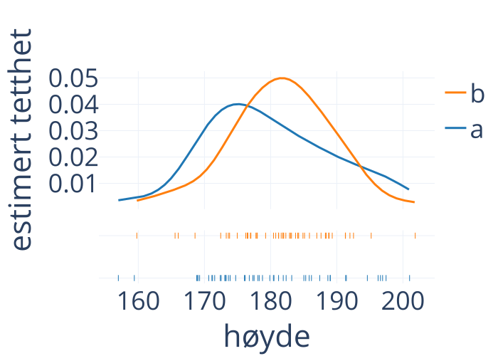
Her ser vi et eksempel med tetthetsestimat gitt i blått og oransje for de to gruppene \(a\) og \(b\).
df.groupby('sample').mean()
| høyde | |
|---|---|
| sample | |
| a | 179.744852 |
| b | 181.466806 |
Middelverdien av høyden i sample \(a\) i blått er 179.7, og i sample \(b\) i oransje er 181.5. Spørsmålet vi prøver å svare på er hva er sannsynligheten å se en så stor forskjell som vi ser, hvis forventningsverdien av fordelingen i populasjon \(a\) og populasjon \(b\) egentlig er like.
høyde_a = df.loc[df.loc[:, 'sample'] == 'a', 'høyde']
høyde_b = df.loc[df.loc[:, 'sample'] == 'b', 'høyde']
np.round(stats.ttest_ind(høyde_a, høyde_b).pvalue, 3)
0.336
I det tilfelle viser det seg at det er en rundt 33.6% sannsynlighet for å se en så stor eller større forskjell mellom middelverdiene, hvis forventningsverdiene er like. Så vi konkluderer at det ikke er noe evidens for at de to populasjonene har forskjellige høyde.
En hypotese er en påstand om sammenhenger som lar seg teste empirisk. Nullhypotesen \(H_0\) beskriver en antatt virkelighet. Før vi har testet, så antar vi at nullhypotesen er sant. Den alternative hypotesen \(H_1\) er påstanden som vi vil teste. Det er alltid det motsatte av nullhypotesen.
I det forrige eksempelet var nullhypotesen at forventningsverdiene var like. Alternativhypotesen var at forventningsverdiene ikke var like.
Et annet eksempel er karakteren i INF161. En student fra 2021 påstår at eksamen var mye vanskeligere i 2021 enn året før. Fra denne påstanden kan vi lage flere hypoteser som vi kan teste. Den kanskje enkleste hypotesen er at den forventete karakteren var høyere i 2020 enn i 2021. Hvis vi lager karakterer om til tall slik at A blir 6 og F blir 1, så kan vi se at middelverdien i 2021 er 4.37 og mean i 2022 er 4.35. Så mean var faktisk høyere. Så hva tenker vi om dette. Denne forskjellen er ganske liten og det var ikke så mange studenter, så vi ville kanskje tenkt at vi ikke har nok evidens for å si at nullhypotesen vår er feil.
Generelt så har vi to mulige resultater av en hypotesetest. Vi kan forkaste nullhypotesen. Det betyr at data tilsier at det er usannsynlig at nullhypotesen er sant. Det andre mulige resultatet av en hypotesetest er at vi ikke forkaster nullhypotesen. Det betyr ikke at vi aksepterer at null-hypotesen er sant, bare at vi ikke har nok evidens for å si at nullhypotesen er feil. Det er det som var konklusjonen vår i det forrige eksemplet.
For å være litt mer presis, så kan må vi se på testen. Når vi vil vite om to mean er forskjellige, så bruker vi t-testen. I eksemplet med høydeforskjeller betyr resultatet at hvis nullhypotesen er sant, så er det en 33.6% sannsynlighet for å se data som har så mye høyere middelverdi som vi ser i dataene våre. Så data vi ser ville ikke vært uvanlige hvis nullhypotesen var sant. Derfor kan vi ikke forkaste nullhypotesen.
Men i dette eksemplet fikk vi bare en så-kalt p-verdi. Om vi forkaster nullhypotesen gitt denne p-verdien er opp til oss. Før vi tester, så må vi velge ut hvor lite p-verdien eller sannsynlighen for å se så ekstreme data gitt nullhypotesen, må bli for at vi forkaster nullhypotesen. Det kalles for signifikansnivået. Typiske verdier for signifikansnivå er 0.05 eller 0.01. Hvis vi velger det som 0.05, så betyr det når at en riktig nullhypotese blir forkastet rundt 1 i 20 ganger.
Vi bruker forskjellige tester for å teste forskjellige nullhypoteser.
Nullhypotese |
Navn |
|
|---|---|---|
Forventningsverdi av numeriske data er lik en fast verdi |
t-test |
ttest_1samp |
Forventningsverdi av to grupper numeriske data er lik |
t-test |
ttest ind |
Kategoriske data har samme frekvens |
chi-kvadrat-test |
chisquare |
Dette er en oversikt over de kanskje mest-brukte hypotesetester. Av og til vil vi teste at en numerisk variabel har en bestemt forventningsverdi. I så fall bruker vi en 1-sample t-test. Eller vi vil sammenligne to forventningsverdier som sett over. I så fall bruker vi en uavhengig t-test. Den siste testen som vi skal se på er om kategoriske data har samme frekvens. For å teste det, så bruker vi chi-kvadrat testen. Det finnes mange flere mulige nullhypoteser og for alle nullhypoteser kan vi i utgangspunktet lage en teststatistikk. Men i dette kurset kan bare se på et lite utvalg av tester.